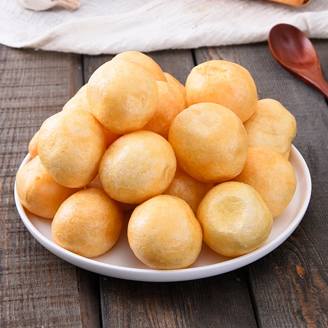

Clear Water Oil Gluten
Traditional Vegetarian DelicacyWuxi oil gluten is a unique traditional food with a golden crispy exterior and a soft, chewy interior. It can be made into soup, braised, or cold dishes, each method having its own unique flavor. Stuffed oil gluten is a classic, combining fresh meat filling with oil gluten, a regular on Wuxi people's dining tables.